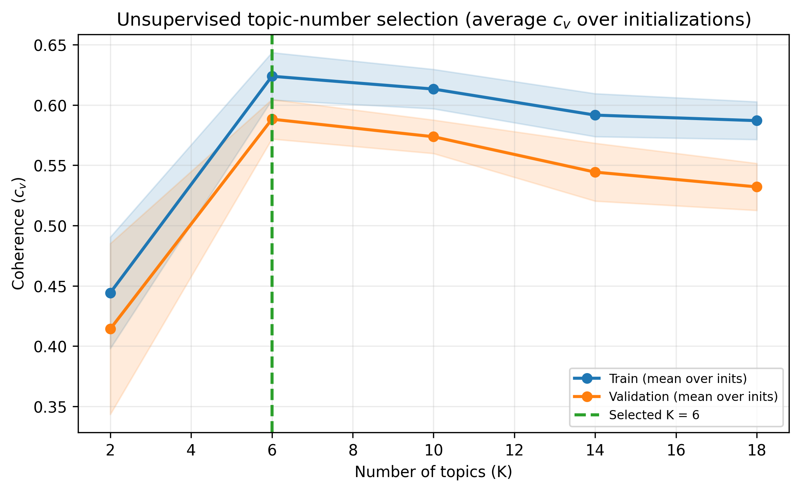
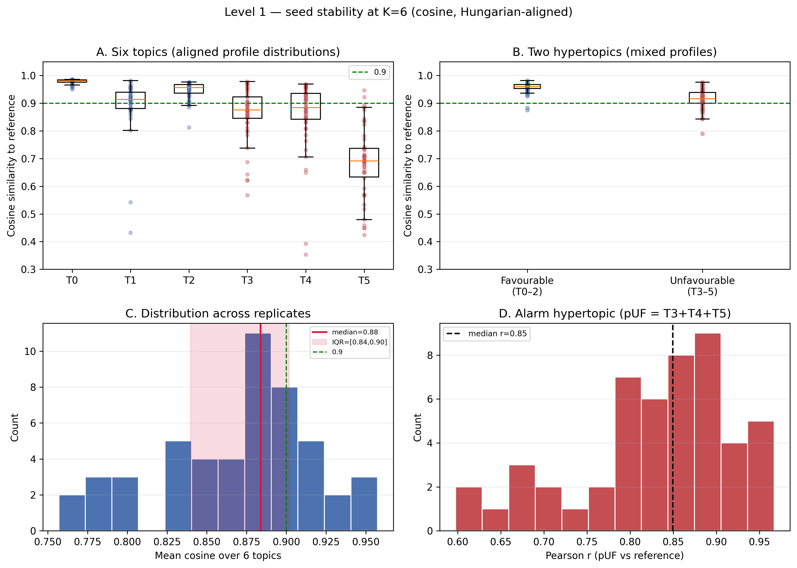
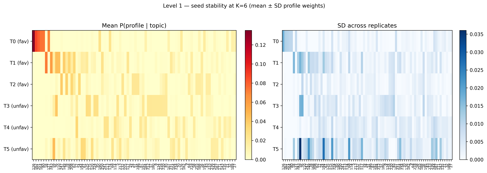
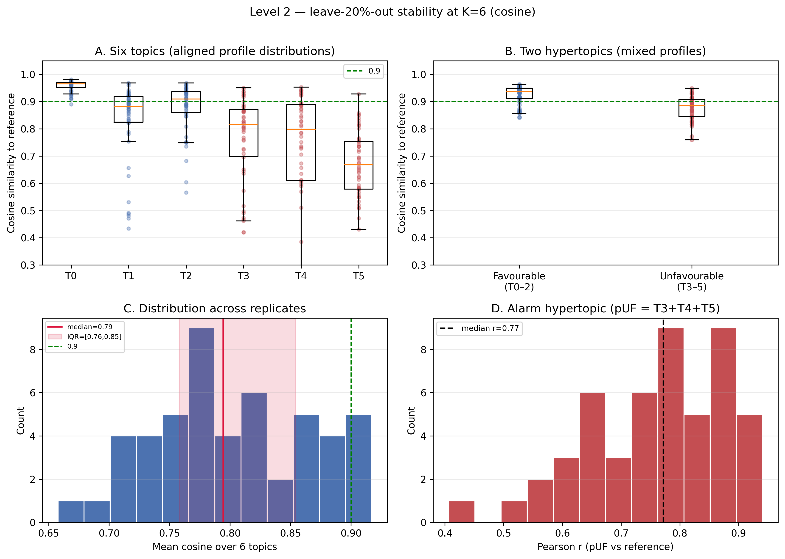
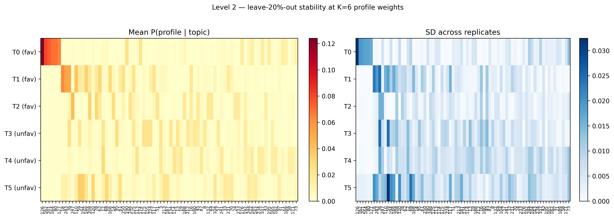

Similarity metric throughout: cosine between aligned P(day-type | topic) distributions (Hungarian matching to the published reference).
Data: reconciled CNIO/DB1 — data/processed/lda/user_embeddings_from_pkl.csv.
Reference model unchanged (LDA_model_vdec25.gensim).
We compared several candidate values of K using mean topic coherence (c_v) over 5 initializations (train/validation 70/30).
Rule: maximise mean validation coherence → K = 6.

Published LDA: K = 6 re-trained with many passes (~100 000), models/lda/LDA_model_vdec25.gensim.
Re-fit LDA 50 times at K = 6 (all patients; different seeds). Align topics to the reference; report cosine similarity of topic–profile distributions and patient pUF concordance.
| Summary | Value |
|---|---|
| Median cosine (all topic–replicate pairs) | 0.915 |
| IQR | [0.844, 0.962] |
| Median of per-replicate mean cosine (6 topics) | 0.884 |
| IQR of per-replicate mean cosine | [0.840, 0.902] |
| Favourable hypertopic cosine (median) | 0.960 |
| Unfavourable hypertopic cosine (median) | 0.916 |
| Patient pUF Pearson r (median [IQR]) | 0.849 [0.795, 0.890] |
| Topic | Hypertopic | Cosine median [IQR] |
|---|---|---|
| T0 | favourable | 0.981 [0.976, 0.984] |
| T1 | favourable | 0.914 [0.880, 0.940] |
| T2 | favourable | 0.957 [0.936, 0.967] |
| T3 | unfavourable | 0.875 [0.846, 0.923] |
| T4 | unfavourable | 0.884 [0.843, 0.935] |
| T5 | unfavourable | 0.691 [0.633, 0.737] |


Same K = 6 and cosine alignment, but each replicate drops 20% of patients at random (n = 50 replicates) and re-fits LDA on the remainder.
| Summary | Value |
|---|---|
| Median cosine (all topic–replicate pairs) | 0.867 |
| IQR | [0.723, 0.931] |
| Median of per-replicate mean cosine | 0.794 |
| Favourable / unfavourable hypertopic cosine (median) | 0.937 / 0.885 |
| Patient pUF Pearson r (median [IQR]) | 0.772 [0.675, 0.858] |
| Topic | Hypertopic | Cosine median [IQR] |
|---|---|---|
| T0 | favourable | 0.965 [0.953, 0.970] |
| T1 | favourable | 0.882 [0.825, 0.919] |
| T2 | favourable | 0.909 [0.860, 0.937] |
| T3 | unfavourable | 0.815 [0.699, 0.871] |
| T4 | unfavourable | 0.797 [0.611, 0.889] |
| T5 | unfavourable | 0.668 [0.579, 0.753] |

